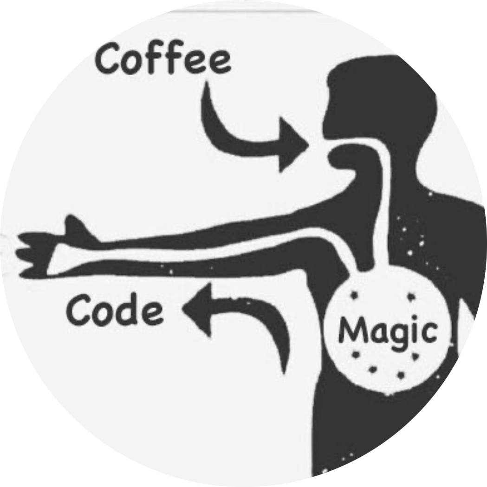
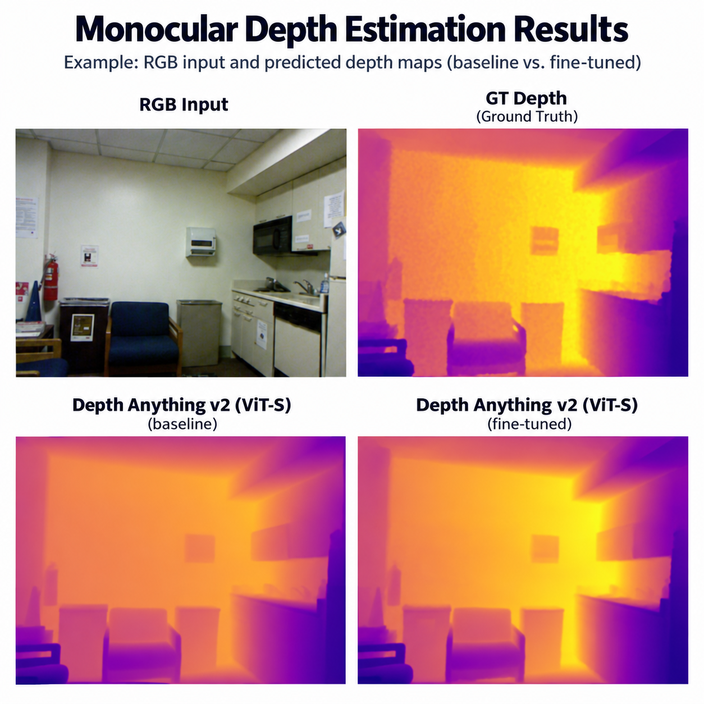
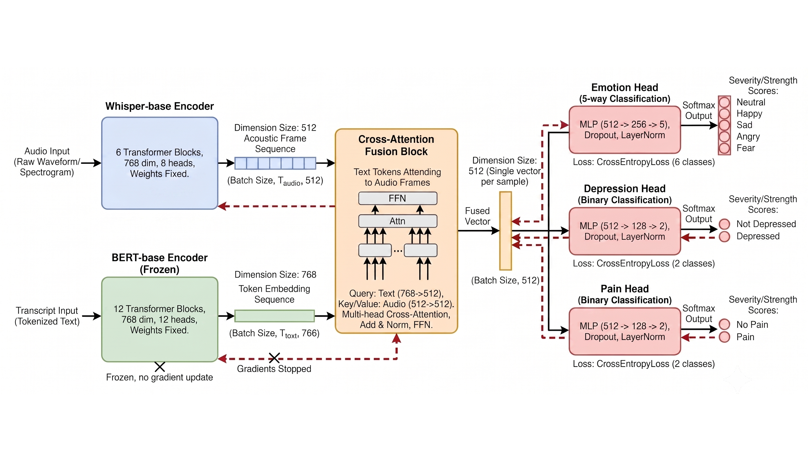
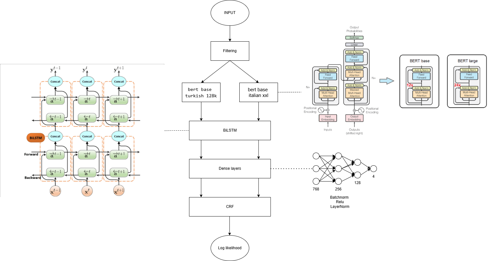
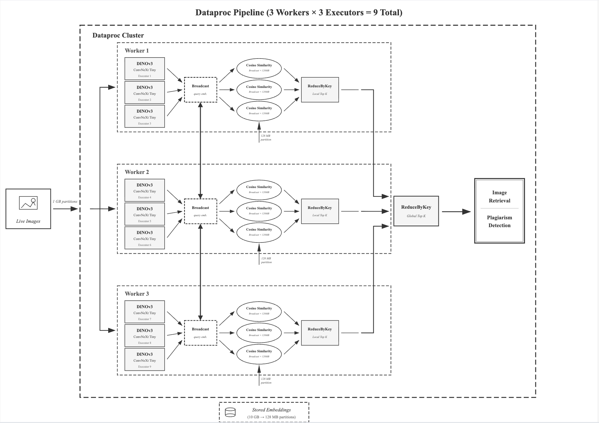
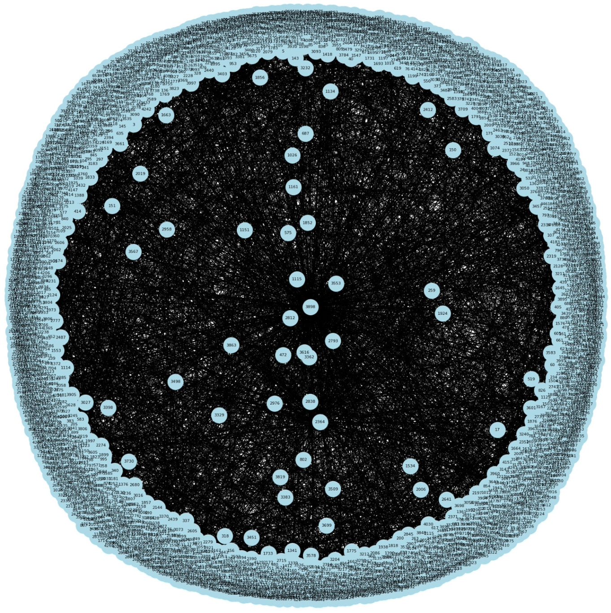
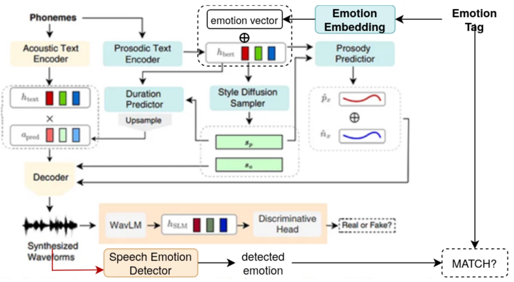
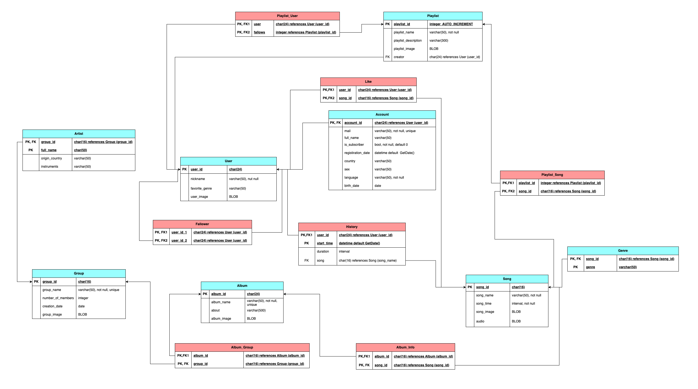

Hello, I'm
Berke Kurt
AI and Data Engineering Graduate


Hello, I'm
AI and Data Engineering Graduate
Get To Know More


Istanbul Technical University
BSc in Artificial Intelligence
and Data Engineering
Welcome to my personal website! 👋 I am Berke Kurt, an Artificial Intelligence and Data Engineering graduate from Istanbul Technical University, currently working as an AI Intern at Netmera. My academic journey has been fueled by a deep passion for exploring the transformative potential of AI, particularly in the realm of deep learning. I constantly engage in creating personal projects and conducting independent studies to deepen my understanding. Feel free to explore my work, and don't hesitate to reach out—I'd be thrilled to connect and explore how we can create something amazing together!
My
Explore My
These are the fields I'm passionate about exploring and developing expertise in. Each represents an area where I'm actively learning and applying my knowledge.
Browse My Recent

An end-to-end single-camera obstacle-detection pipeline that estimates depth from a single image and flags nearby obstacles. Key innovations include:

A multimodal multi-task deep learning system that assesses emotional and health-related states from speech by combining acoustic and linguistic features. Key innovations include:

A project focused on token-level identification of idiomatic multi-word expressions (MWEs) in Turkish and Italian sentences using a transformer-based sequence labeling pipeline. Key innovations include:

A big data project focused on detecting duplicate and near-duplicate images at scale for automated plagiarism/copyright checks, using deep image embeddings and distributed processing. Key innovations include:

A project aimed at forecasting customer repurchase timing in e-commerce using machine learning techniques. Key innovations include:

A project focused on improving the emotional expressiveness of Text-to-Speech (TTS) systems by integrating emotion embeddings into the synthesis pipeline. Key innovations include:

A project aimed at designing a robust database system for music streaming platforms to manage vast amounts of data related to artists, albums, songs, playlists, and user interactions. Key features include:
Get in Touch